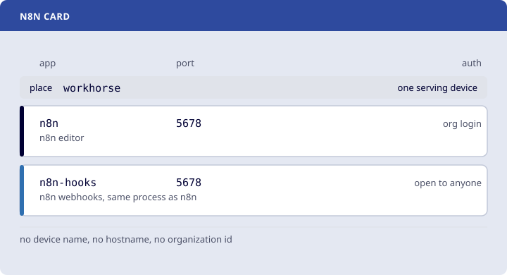

Pattern card
n8n
- Two doors Each hostname has its own rule: org login, open to anyone.
n8n with its editor behind org and a webhook hostname open to the services that call it
Stewarded by edgible-orgEdgible cards 1/66
Cards / n8n
n8n with its editor behind org and a webhook hostname open to the services that call it
Stewarded by edgible-orgEdgible cards 1/66

| App | What | Who can reach it | Place |
|---|---|---|---|
n8n | n8n editor | org login | workhorse |
n8n-hooks | n8n webhooks, same process as n8n | open to anyone | workhorse |
A place is one serving device. Minimum recommended for each:
| Place | Memory | Disk | Architecture | GPU |
|---|
The first start downloads the app's images: about 666 MB, a few minutes on a typical home connection. That time is the download from the app's registry, not Edgible, and it happens once: later starts and upgrades reuse the images and fetch only what changed.
Its data is in the volumes db_storage and n8n_storage. The card does not say yet which of them hold what only you have, so back them all up.
POSTGRES_PASSWORD, POSTGRES_NON_ROOT_PASSWORD, RUNNERS_AUTH_TOKEN and N8N_OWNER_PASSWORD. Check fills them in, and they stay on the machine.Setting it up by hand? Install Edgible from edgible.com (opens in a new tab), then follow the steps below.
Moving work between systems usually goes to a hosted automation service, along with the keys to everything it touches. This card keeps that work on a machine you own. n8n asks for an org login. n8n-hooks stays open, because GitHub, Stripe, and curl cannot complete a browser login.
Both hostnames are the same n8n, and Edgible's auth mode covers a whole hostname. So n8n-hooks also shows n8n's own sign-in page, and n8n's login is what protects the editor there, as it does for most self-hosted n8n. Use a strong owner password. The org login adds a second lock only on n8n.
Both apps are the place workhorse, so they stay on one serving device. They share port 5678. The Compose file is docker-compose.yml (opens in a new tab). It runs Postgres and a task runner, and init-data.sh (opens in a new tab) sits next to it. The file reads the passwords, the host port, and ORG_LABEL from card.env (opens in a new tab). The editor hostname is n8n plus that label. The webhook hostname is n8n-hooks plus that label. The card is card.yml (opens in a new tab).
Six steps. Edit card.env (opens in a new tab) before you start. docker-compose.yml (opens in a new tab) reads that file.
On the machine that will run the containers, fetch this card. Running this again replaces card.env, including the device name and any password you filled in.
mkdir -p n8n
curl -fsSL https://github.com/edgible-org/cards/archive/refs/heads/main.tar.gz \
| tar -xz --strip-components=2 -C n8n cards-main/n8n
Open n8n/card.env and follow the comments in that file.
nano n8n/card.env
Check this machine before anything starts. The check reads card.env and looks for what the card would collide with: a host port, a container name, a Compose project, a leftover volume, a device name, or an app name. Each conflict prints its remedy. The report ends with those remedies as lines to paste into a shell: they fill empty secrets and change ports in card.env, keeping the old copy as card.env.bak. A line that stops or deletes something starts with #, so it runs only if you remove the #. Run the check again until it says no conflicts. It needs python3 and Docker, and it uses edgible when that is installed.
curl -fsSLo check-env.py https://raw.githubusercontent.com/edgible-org/card-kit/main/check-env.py
python3 check-env.py n8n
docker compose --env-file n8n/card.env -f n8n/docker-compose.yml pull
docker compose --env-file n8n/card.env -f n8n/docker-compose.yml up -d --wait
The first start downloads the app's images from the registries named in the Compose file, which takes longer for a larger app. pull does that download on its own, so you can see it. The time is the download, not Edgible, and it happens once: later starts and upgrades reuse the images on the machine and fetch only what changed. --wait returns when each service is running, and healthy when it has a healthcheck. A healthcheck comes from the Compose file or from the image. ps shows (healthy) in the status of each service that has one:
docker compose --env-file n8n/card.env -f n8n/docker-compose.yml ps
If --wait stops with unhealthy, logs <service> with the same --env-file and -f usually says why.
n8n gives the owner account to whoever sets it up first, and n8n-hooks is public, so make it on this machine before Publish. Set N8N_OWNER_EMAIL in card.env (opens in a new tab) and generate N8N_OWNER_PASSWORD, then:
sh n8n/prepare.sh
prepare.sh (opens in a new tab) is:
#!/bin/sh
# Prepare for the n8n card: make the owner on this machine, so a stranger cannot be first to do it.
# n8n gives the owner account to whoever sets it up first, and n8n-hooks is public.
# Run it after Start and before Publish, from the directory that holds n8n/:
# sh n8n/prepare.sh
set -eu
cd "$(dirname "$0")"
set -a; . ./card.env; set +a
U="http://127.0.0.1:${N8N_PORT:?set N8N_PORT in card.env}"
settings=
for _ in $(seq 36); do
settings=$(curl -fsS "$U/rest/settings" 2>/dev/null) && break
sleep 5
done
[ -n "$settings" ] || { echo "n8n did not answer on $U after three minutes" >&2; exit 1; }
# An owner already made, such as when upgrading a running card, stays as it is.
if ! printf '%s' "$settings" | grep -q '"showSetupOnFirstLoad":true'; then
echo "n8n already has an owner: nothing to do"
exit 0
fi
: "${N8N_OWNER_EMAIL:?set N8N_OWNER_EMAIL in card.env}"
: "${N8N_OWNER_PASSWORD:?set N8N_OWNER_PASSWORD in card.env}"
body=$(printf '{"email":"%s","firstName":"Owner","lastName":"Admin","password":"%s"}' "$N8N_OWNER_EMAIL" "$N8N_OWNER_PASSWORD")
code=$(printf '%s' "$body" | curl -s -o /dev/null -w '%{http_code}' -X POST -H 'Content-Type: application/json' -d @- "$U/rest/owner/setup")
[ "$code" = 200 ] || { echo "n8n refused the owner with $code: the password needs 8 characters, a number and a capital" >&2; exit 1; }
echo "Owner $N8N_OWNER_EMAIL made, with the password N8N_OWNER_PASSWORD in card.env"
It prints Owner <address> made, or n8n already has an owner: nothing to do on a card that is running already. The password stays on this machine, in card.env.
jq reads that device's id out of edgible device list.
set -euo pipefail
set -a
. n8n/card.env
set +a
device_id=$(edgible device list --json | jq -er --arg name "$DEVICE" '
map(select(.name == $name))
| if length == 1 then .[0].id
else error("need exactly one device named " + $name + " (" + (map(.status + " " + .id) | join(", ")) + ")")
end
')
edgible app create existing \
--non-interactive \
--name n8n \
--port "$N8N_PORT" \
--protocol https \
--auth-modes org \
--device-id "$device_id"
edgible app create existing \
--non-interactive \
--name n8n-hooks \
--port "$N8N_PORT" \
--protocol https \
--auth-modes none \
--device-id "$device_id"
edgible app list
edgible app list shows n8n with org and n8n-hooks with none.
edgible app list prints each hostname. Each app answers the way its auth mode says: none with the app, org with a redirect to the Edgible sign-in, and api-key with 401 until a key is sent. This checks the card. The rest of each app's setup is in that app's docs.
n8n uses org.
curl -sS -o /dev/null -w '%{http_code} %{redirect_url}\n' "https://<n8n hostname>"
That prints 302 and an edgible.com/application-access/ address, so the org sign-in is in front. Open the hostname in a browser and sign in. The owner is N8N_OWNER_EMAIL, with N8N_OWNER_PASSWORD. The rest of the setup is in the n8n docs (opens in a new tab).
n8n-hooks uses none.
curl -fsS "https://<n8n-hooks hostname>/healthz"
That prints {"status":"ok"} from n8n, not the Edgible sign-in.
Four steps, in this order. Step 1 runs wherever edgible is logged in. Steps 2 to 4 run on the machine that runs the containers. Steps 2 and 3 read card.env, so keep it until step 4.
Delete the apps first, so no hostname points at a stopped container, and the names are free if you set the card up again.
edgible app delete n8n --yes
edgible app delete n8n-hooks --yes
This stops and removes the containers. The volumes stay, so Start brings the card back with its data.
docker compose --env-file n8n/card.env -f n8n/docker-compose.yml down
Skip this step to keep the data. It cannot be undone. The loop first copies each volume to a .tgz file in this directory. The containers are stopped, so each copy is whole.
for volume in $(docker volume ls -q --filter label=com.docker.compose.project=n8n); do
docker run --rm -v "$volume:/data:ro" -v "$PWD:/backup" alpine tar -czf "/backup/$volume.tgz" -C /data .
done
docker compose --env-file n8n/card.env -f n8n/docker-compose.yml down --volumes
To bring a copy back, keep the card.env it was made with, because the databases in it expect those passwords. create makes the containers and the volumes without starting them. Unpack each copy into its volume, then Start.
docker compose --env-file n8n/card.env -f n8n/docker-compose.yml create
docker run --rm -v "<volume>:/data" -v "$PWD:/backup" alpine tar -xzf "/backup/<volume>.tgz" -C /data
card.env holds the passwords, and card.env.bak holds the copy from before the check edited it. If you kept the volumes in step 3, keep card.env too. The databases in those volumes expect its passwords.
rm -rf n8n